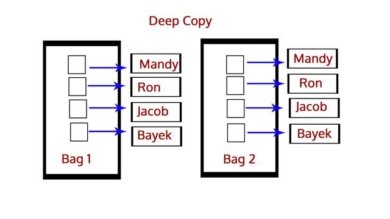
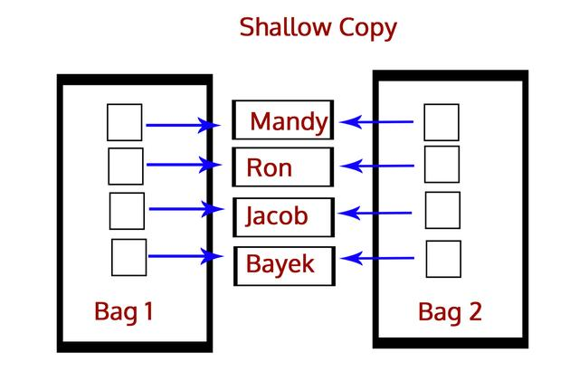

7 Mar, 2018 in Python Tutorials by DataFlair Team
1. Python Interview Questions and Answers
1.Python面试问题及答案
To land a job with Python as a fresher, you must be acquainted with the basics. Here, we discuss some basic Python Interview Questions and answers and some advanced Python Questions and answers to help you ace your interview. There are Python developer interview questions, Python Coding interview questions, data structure interview questions as well as Python Scripting Interview questions. Delve into Python Programming Interview questions one by one.
作为一个Python新手，你必须熟悉基础知识。在本文中我们将讨论一些Python面试的基础问题和高级问题以及答案，以帮助你完成面试。包括Python开发问题、编程问题、数据结构问题、和Python脚本问题。让我们来深入研究这些问题。
Python Interview Questions
Python面试问题
Q.1. What are the key features of Python
Q.1.Python的特点和优点是什么？
If it makes for an introductory language to programming, Python must mean something. These are its qualities:
Python可以作为编程的入门语言，因为他具备以下特质：
Interpreted
1.解释性
Dynamically-typed
2.动态特性
Object-oriented
3.面向对象
Concise and simple
4.语法简洁
Free
5.开源
Has a large community
6.丰富的社区资源
In fact, that isn't all. Python is so much more. Read up on Introduction to Python.
实际上Python的优点远不止这些，更详细的介绍可以阅读IntroductiontoPython
Q.2. Differentiate between deep and shallow copy.
Q.2.深拷贝和浅拷贝的区别是什么？
A deep copy copies an object into another. This means that if you make a change to a copy of an object, it won't affect the original object. In Python, we use the function deepcopy() for this, and we import the module copy. We use it like:
深拷贝是将对象本身复制给另一个对象。这意味着如果对对象的副本进行更改时不会影响原对象。在Python中，我们使用deepcopy（）函数进行深拷贝，使用方法如下：
>>> import copy
>>> b=copy.deepcopy(a)

A shallow copy, however, copies one object's reference to another. So, if we make a change in the copy, it will affect the original object. For this, we have the function copy(). We use it like:
浅拷贝是将对象的引用复制给另一个对象。因此，如果我们在副本中进行更改，则会影响原对象。使用copy（）函数进行浅拷贝，使用方法如下：
>>> b=copy.copy(a)

Q.3. Differentiate between lists and tuples.
Q.3.列表和元祖有什么不同？
The major difference is that a list is mutable, but a tuple is immutable. Examples:
主要区别在于列表是可变的，元祖是不可变的。看下面的例子：
>>> mylist=[1,3,3]
>>> mylist[1]=2
>>> mytuple=(1,3,3)
>>> mytuple[1]=2
Traceback (most recent call last):
File "
mytuple[1]=2
TypeError: ‘tuple' object does not support item assignment
For more insight, refer to Tuples vs Lists.
关于列表和元祖的更多内容参考Tuples vs Lists
2. Basic Python Interview Questions for Freshers
2.Python面试基础题
Q.4 to Q.20 are some basic Python Interview question for freshers, however Experience can also refer these questions to revise basic concepts.
Q.4到Q.20是新手经常会被问到的一些Python基础题，有经验的人也可以参考这些问题来复习这些概念。
Q.4. Explain the ternary operator in Python.
Q.4.解释Python中的三元表达式
Unlike C++, we don't have : in Python, but we have this:
与C++不同，在Python中我们不需要使用？符号，而是使用如下语法：
[on true] if [expression] else [on false]
[on true] if [expression] else [on false]
If the expression is True, the statement under [on true] is executed. Else, that under [on false] is executed.
如果[expression]为真，则[ontrue]部分被执行。如果表示为假则[onfalse]部分被执行
Below is how you would use it:
下面是例子:
>>> a,b=2,3
>>> min=a if a<b else b
>>> min
2
>>> print("Hi") if a<b else print("Bye")
Hi
Q.5. How is multithreading achieved in Python
Q.5.Python中如何实现多线程？
A thread is a lightweight process, and multithreading allows us to execute multiple threads at once. As you know, Python is a multithreaded language. It has a multi-threading package.
线程是轻量级的进程，多线程允许一次执行多个线程。众所周知，Python是一种多线程语言，它有一个多线程包。
The GIL (Global Interpreter Lock) ensures that a single thread executes at a time. A thread holds the GIL and does a little work before passing it on to the next thread. This makes for an illusion of parallel execution. But in reality, it is just threads taking turns at the CPU. Of course, all the passing around adds overhead to the execution.
GIL（全局解释器锁）确保一次执行单个线程。一个线程保存GIL并在将其传递给下一个线程之前执行一些操作，这就产生了并行执行的错觉。但实际上，只是线程轮流在CPU上。当然，所有传递都会增加执行的开销。
Q.6. Explain inheritance.
Q.6.解释继承
When one class inherits from another, it is said to be the child/derived/sub class inheriting from the parent/base/super class. It inherits/gains all members (attributes and methods).
一个类继承自另一个类，也可以说是一个孩子类/派生类/子类，继承自父类/基类/超类，同时获取所有的类成员（属性和方法）。
Inheritance lets us reuse our code, and also makes it easier to create and maintain applications. Python supports the following kinds of inheritance:
继承使我们可以重用代码，并且还可以更方便地创建和维护代码。Python支持以下类型的继承：
Single Inheritance- A class inherits from a single base class.
1.单继承-一个子类类继承自单个基类
Multiple Inheritance- A class inherits from multiple base classes.
2.多重继承-一个子类继承自多个基类
Multilevel Inheritance- A class inherits from a base class, which, in turn, inherits from another base class.
3.多级继承-一个子类继承自一个基类，而基类继承自另一个基类
Hierarchical Inheritance- Multiple classes inherit from a single base class.
4.分层继承-多个子类继承自同一个基类
Hybrid Inheritance- Hybrid inheritance is a combination of two or more types of inheritance.
5.混合继承-两种或两种以上继承类型的组合
For more on inheritance, refer to Python Inheritance.
关于继承的更多内容参考Python Inheritance
Q.7. What is Flask
Q.7.什么是Flask？
Flask, as we've previously discussed, is a web microframework for Python. It is based on the ‘Werkzeug, Jinja 2 and good intentions' BSD license. Two of its dependencies are Werkzeug and Jinja2. This means it has around no dependencies on external libraries. Due to this, we can call it a light framework.
Flask是一个使用Python编写的轻量级Web应用框架，使用BSD授权。其WSGI工具箱采用Werkzeug，模板引擎则使用Jinja2。除了Werkzeug和Jinja2以外几乎不依赖任何外部库。因为Flask被称为轻量级框架。
A session uses a signed cookie to allow for the user to look at and modify session contents. It will remember information from one request to another. However, to modify a session, the user must have the secret key Flask.secret_key.
Flask的会话会话使用签名cookie来允许用户查看和修改会话内容。它会记录从一个请求到另一个请求的信息。但如果要修改会话，则必须有密钥Flask.secret_key。
We will discuss Flask in greater detail in a further lesson.
我们将在后续的课程中进一步讨论Flask。
Q.8. How is memory managed in Python
Q.8.如何在Python中管理内存？
Python has a private heap space to hold all objects and data structures. Being programmers, we cannot access it; it is the interpreter that manages it. But with the core API, we can access some tools. The Python memory manager controls the allocation.
Python用一个私有堆内存空间来放置所有对象和数据结构，我们无法访问它。由解释器来管理它。不过使用一些核心API，我们可以访问一些Python内存管理工具控制内存分配。
Additionally, an inbuilt garbage collector recycles all unused memory so it can make it available to the heap space.
Q.9. Explain help() and dir() functions in Python.
Q.9.解释Python中的help()函数和dir()函数。
The help() function displays the documentation string and help for its argument.
help()函数返回帮助文档和参数说明：
>>> import copy
>>> help(copy.copy)
Help on function copy in module copy:
copy(x)
Shallow copy operation on arbitrary Python objects.
See the module's __doc__ string for more info.
The dir() function displays all the members of an object(any kind).
dir()函数返回对象中的所有成员(任何类型)
>>> dir(copy.copy)
[‘__annotations__', ‘__call__', ‘__class__', ‘__closure__', ‘__code__', ‘__defaults__', ‘__delattr__', ‘__dict__', ‘__dir__', ‘__doc__', ‘__eq__', ‘__format__', ‘__ge__', ‘__get__', ‘__getattribute__', ‘__globals__', ‘__gt__', ‘__hash__', ‘__init__', ‘__init_subclass__', ‘__kwdefaults__', ‘__le__', ‘__lt__', ‘__module__', ‘__name__', ‘__ne__', ‘__new__', ‘__qualname__', ‘__reduce__', ‘__reduce_ex__', ‘__repr__', ‘__setattr__', ‘__sizeof__', ‘__str__', ‘__subclasshook__']
Q.10. Whenever you exit Python, is all memory de-allocated
Q.10.当退出Python时是否释放所有内存分配？
The answer here is no. The modules with circular references to other objects, or to objects referenced from global namespaces, aren't always freed on exiting Python.
答案是否定的。那些具有对象循环引用或者全局命名空间引用的变量，在Python退出是往往不会被释放
Plus, it is impossible to de-allocate portions of memory reserved by the C library.
另外不会释放C库保留的部分内容。
Q.11. What is monkey patching
Q.11.什么是猴子补丁？
Dynamically modifying a class or module at run-time.
在运行时动态修改类和模块
>>> class A:
def func(self):
print("Hi")
>>> def monkey(self):
print "Hi, monkey"
>>> m.A.func = monkey
>>> a = m.A()
>>> a.func()
Hi, monkey
Q.12. What is a dictionary in Python
Q.12.什么是Python字典？
A dictionary is something I have never seen in other languages like C++ or Java. It holds key-value pairs.
字典是我在C++和Java中没有见过的数据结构，它拥有键-值对
>>> roots={25:5,16:4,9:3,4:2,1:1}
>>> type(roots)
>>> roots[9]
3
A dictionary is mutable, and we can also use a comprehension to create it.
字典是可变的，我们也可以用推导式的方式创建它.
>>> roots={x**2:x for x in range(5,0,-1)}
>>> roots
{25: 5, 16: 4, 9: 3, 4: 2, 1: 1}
To learn more about dictionaries, read on Python Dictionaries.
要了解更多字典的内容请点击Python Dictionaries
Q.13. What do you mean by *args and **kwargs
Q.13.能否解释一下*args和**kwargs？
In cases when we don't know how many arguments will be passed to a function, like when we want to pass a list or a tuple of values, we use *args.
如果我们不知道将多少个参数传递给函数，比如当我们想传递一个列表或一个元组值时，就可以使用*args。
>>> def func(*args):
for i in args:
print(i)
>>> func(3,2,1,4,7)
3
2
1
4
7
**kwargs takes keyword arguments when we don't know how many there will be.
当我们不知道将会传入多少关键字参数时，使用**kwargs会收集关键字参数。
>>> def func(**kwargs):
for i in kwargs:
print(i,kwargs[i])
>>> func(a=1,b=2,c=7)
a.1
b.2
c.7
The words args and kwargs are convention, and we can use anything in their place.
使用args和kwargs作为参数名只是举例，可以任意替换。
Any doubt yet in Basic Python Interview Questions and answers for Freshers Please ask in Comments.
对于Python的基础题任何疑问，请在评论区提问。
Q.14. Write Python logic to count the number of capital letters in a file.
Q.14.编程实现计算文件中的大写字母数
>>> import os
>>> os.chdir('C:\\Users\\lifei\\Desktop')
>>> with open('Today.txt') as today:
count=0
for i in today.read():
if i.isupper():
count+=1
print(count)
26
Q.15. What are negative indices
Q.15.什么是负索引？
Let's take a list for this.
我们先创建如下列表：
>>> mylist=[0,1,2,3,4,5,6,7,8]
A negative index, unlike a positive one, begins searching from the right.
与正索引不同，负索引是从右边开始检索。
>>> mylist[-3]
6
This also helps with slicing from the back:
同样可以用于列表的切片：
>>> mylist[-6:-1]
[3, 4, 5, 6, 7]
Q.16. How would you randomize the contents of a list in-place
Q.16.如何随机打乱列表中元素，要求不引用额外的内存空间？
For this, we'll import the function shuffle() from the module random.
我们用random包中的shuffle()函数来实现。
>>> from random import shuffle
>>> shuffle(mylist)
>>> mylist
[3, 4, 8, 0, 5, 7, 6, 2, 1]
Q.17. Explain join() and split() in Python.
Q.17.解释Python中的join()和split()函数
join() lets us join characters from a string together by a character we specify.
join()函数可以将指定的字符添加到字符串中。
>>> ','.join('12345')
‘1,2,3,4,5'
split() lets us split a string around the character we specify.
split()函数可以用指定的字符分割字符串
>>> '1,2,3,4,5'.split(',')
[‘1', ‘2', ‘3', ‘4', ‘5']
Q.18. Is Python case-sensitive
Q.18.Python区分大小写吗？
A language is case-sensitive if it distinguishes between identifiers like myname and Myname. In other words, it cares about case- lowercase or uppercase. Let's try this with Python.
验证Python是否区分大小写的方法是测试myname和Myname在程序中是不是算同一个标识符。观察以下代码的返回结果：
>>> myname='Ayushi'
>>> Myname
Traceback (most recent call last):
File "
Myname
NameError: name ‘Myname' is not defined
As you can see, this raised a NameError. This means that Python is indeed case-sensitive.
如你所见，这里出现了NameError，所以Python是区分大小的语言。
Q.19. How long can an identifier be in Python
Q.19.Python中标识符的命名规则？
In Python, an identifier can be of any length. Apart from that, there are certain rules we must follow to name one:
Python中的标识符可以是任意长度，但必须遵循以下命名规则:
It can only begin with an underscore or a character from A-Z or a-z.
1.只能以下划线或者A-Z/a-z中的字母开头。
The rest of it can contain anything from the following: A-Z/a-z/_/0-9.
2.其余部分只能使用A-Z/a-z/0-9。
Python is case-sensitive, as we discussed in the previous question.
3.Python标识符区分大小写。
Keywords cannot be used as identifiers. Python has the following keywords:
4.关键字不能作为标识符。Python有以下这些关键字：
Q.20. How do you remove the leading whitespace in a string
Q.20.如何删除字符串中的前置空格
Leading whitespace in a string is the whitespace in a string before the first non-whitespace character. To remove it from a string, we use the method lstrip().
前置空格是第一个非空格字符前的所有空格，使用lstrip()函数来删除.
>>> ' Ayushi '.lstrip()
‘Ayushi ‘
As you can see, this string had both leading and trailing whitespaces. lstrip() stripped the string of the leading whitespace. If we want to strip the trailing whitespace instead, we use rstrip().
如图这个字符串既包含前置空格也包含后置空格.调用lstrip()函数去除了前置空格。如果想去除后置空格，使用rstrip()函数。
>>> ' Ayushi '.rstrip()
‘ Ayushi'
These were basic Python Interview Questions and answers for Freshers.
以上是面向Python新手的基础题部分。
3. Advanced Python Interview Questions and Answers for Experienced
3.Python面试进阶题
Q. 21 to Q. 35 are some Advanced Python Interview questions for Experience along with their answers and Examples.
Q.21至Q.35是针对有经验者的一些Python面试问题及其答案和示例。
Q.21. How would you convert a string into lowercase
Q.21.如何将字符串转换为小写？
We use the lower() method for this.
使用lower()函数
>>> 'AyuShi'.lower()
‘ayushi'
To convert it into uppercase, then, we use upper().
转换为大写用upper()函数
>>> 'AyuShi'.upper()
‘AYUSHI'
Also, to check if a string is in all uppercase or all lowercase, we use the methods isupper() and islower().
要检查字符串是否为全大写或全小写，使用isupper()和islower()函数
>>> 'AyuShi'.isupper()
FALSE
>>> 'AYUSHI'.isupper()
TRUE
>>> 'ayushi'.islower()
TRUE
>>> '@yu$hi'.islower()
TRUE
>>> '@YU$HI'.isupper()
TRUE
So, characters like @ and $ will suffice for both cases.
像@和$这样的字符即满足大写也满足小写。
Also, istitle() will tell us if a string is in title case.
istitle()可以检查字符串是否是标题格式。
>>> 'The Corpse Bride'.istitle()
TRUE
Q.22. What is the pass statement in Python
Q.22.Python中的pass语句有什么作用？
There may be times in our code when we haven't decided what to do yet, but we must type something for it to be syntactically correct. In such a case, we use the pass statement.
我们在写代码时，有时可能只写了函数声明而没想好函数怎么写，但为了保证语法检查的正确必须输入一些东西。在这种情况下，我们使用pass语句。
>>> def func(*args):
pass
>>>
Similarly, the break statement breaks out of a loop.
类似的break语句可以跳出循环。
>>> for i in range(7):
if i==3: break
print(i)
0
1
2
Finally, the continue statement skips to the next iteration.
continue语句可以跳到下一轮循环。
>>> for i in range(7):
if i==3: continue
print(i)
0
1
2
4
5
6
Q.23. What is a closure in Python
Q.23.请解释Python中的闭包？
A closure is said to occur when a nested function references a value in its enclosing scope. The whole point here is that it remembers the value.
如果在一个内部函数里。对在外部作用域（但不是在全局作用域）的变量进行引用，那么内部函数就是一个闭包。
>>> def A(x):
def B():
print(x)
return B
>>> A(7)()
7
For more depth on closures, refer to Closures in Python.
闭包的详细解释请点击Closures in Python
Q.24. Explain the //, %, and ** operators in Python.
Q.24.解释Python中的//，％和**运算符
The // operator performs floor division. It will return the integer part of the result on division.
//运算符执行地板除法，返回结果的整数部分(向下取整)。
>>> 7//2
3
Normal division would return 3.5 here.
用/符号除法结果为3.5。
Similarly, ** performs exponentiation. a**b returns the value of a raised to the power b.
**符号表示取幂.a**b返回a的b次方
>>> 2**10
1024
Finally, % is for modulus. This gives us the value left after the highest achievable division.
%是取模符号。返回除法后的余数。
>>> 13%7
6
>>> 3.5%1.5
0.5
Any Doubt yet in Advanced Python Interview Questions and Answers for Experienced Please Comment.
对于Python进阶面试问题和答案有任何疑问请在评论区提问。
Q.24. How many kinds of operators do we have in Python Explain arithmetic operators.
Q.24.Python中有多少种运算符，解释算术运算符。
This type of Python Interview Questions and Answers can decide your knowledge in Python. Answer the Python Interview Questions with some good Examples.
这类面试问题可以判断你的Python功底，可以举一些实例来回答这类问题。
Here in Python, we have 7 kinds of operators: arithmetic, relational, assignment, logical, membership, identity, and bitwise.
在Python中我们有7中运算符:算术运算符、关系(比较)运算符、赋值运算符、逻辑运算符、位运算符、成员运算符、身份运算符。
We have seven arithmetic operators. These allow us to perform arithmetic operations on values:
Addition (+) This adds two values.
1.加号(+)将两个对象的值相加。
>>> 7+8
15
Subtraction (-) This subtracts he second value from the first.
2.减号(-)将第一个对象的值减去第二个对象的值。
>>> 7-8
-1
Multiplication (*) This multiplies two numbers.
3.乘号(*)将两个对象的值相乘。
>>> 7*8
56
Division (/) This divides the first value by the second.
4.除号(/)将第一个对象的值除以第二个对象的值。
>>> 7/8
0.875
>>> 1/1
1
For floor division, modulus, and exponentiation, refer to the previous question.
关于地板除法、取模和取幂，请参考上一个问题。
Q.25. Explain relational operators in Python.
Q.25.解释Python中的关系运算符。
Relational operators compare values.
关系运算符用来比较两个对象。
Less than (<) If the value on the left is lesser, it returns True.
1.判断小于(<)：如果符号左边的值比右边小则返回True。
>>> 'hi'<'Hi'
FALSE
Greater than (>) If the value on the left is greater, it returns True.
2.判断大于(>)：如果符号左边的值比右边大则返回True。
>>> 1.1+2.2>3.3
TRUE
This is because of the flawed floating-point arithmetic in Python, due to hardware dependencies.
出现上面的错误结果是因为Python的浮点运算存在一些Bug。
Less than or equal to (<=) If the value on the left is lesser than or equal to, it returns True.
3.判断小于等于(<=)：如果符号左边的值小于或等于右边则返回True。
>>> 3.0<=3
TRUE
Greater than or equal to (>=) If the value on the left is greater than or equal to, it returns True.
4.大判断于等于(>=)：如果符号左边的值大于或等于右边则返回True。
>>> True>=False
TRUE
Equal to (==) If the two values are equal, it returns True.
5.判断等于(==)如果符号两边的值相等则返回True。
>>> {1,3,2,2}=={1,2,3}
TRUE
Not equal to (!=) If the two values are unequal, it returns True.
6.判断不等于(！=)如果符号两边的值不等则返回True。
>>> True!=0.1
TRUE
>>> False!=0.1
TRUE
Q.26. What are assignment operators in Python
Q.26.解释Python中的赋值和算数运算符？
This one is an Important Interview question in Python Interview.
这是面试中的常见题目。
We can combine all arithmetic operators with the assignment symbol.
我们将算数运算符和赋值符号放在一起介绍。
>>> a=7
>>> a+=1
>>> a
8
>>> a-=1
>>> a
7
>>> a*=2
>>> a
14
>>> a/=2
>>> a
7
>>> a**=2
>>> a
49
>>> a//=3
>>> a
16
>>> a%=4
>>> a
0
Q.27. Explain logical operators in Python.
Q.27.解释Python中的逻辑运算符
We have three logical operators- and, or, not.
Python中有三个逻辑运算符：and、or、not
>>> False and True
FALSE
>>> 7<7 or True
TRUE
>>> not 2==2
FALSE
Q.28. What are membership operators
Q.28.解释Python中的成员运算符
With the operators ‘in' and ‘not in', we can confirm if a value is a member in another.
使用in和notin运算符我们可以判断某个值是否在成员中。
>>> 'me' in 'disappointment'
TRUE
>>> 'us' not in 'disappointment'
TRUE
Q.29. Explain identity operators in Python.
Q.29.解释Python中的身份运算符
This is one of the very commonly asked Python Interview Questions and answer it with examples.
这是非常常见的Python面试题，用下面的示例来回答.
The operators ‘is' and ‘is not' tell us if two values have the same identity.
is和is not运算符可以判断两个对象是否相同
>>> 10 is '10'
FALSE
>>> True is not False
TRUE
Q.30. Finally, tell us about bitwise operators in Python.
Q.30.解释Python中的位运算符
These operate on values bit by bit.
此运算符按二进制位对值进行操作。
AND (&) This performs & on each bit pair.
1.与(&)返回按位与结果
>>> 0b110 & 0b010
2
OR (|) This performs | on each bit pair.
2.或(|)返回按位或结果
>>> 3|2
3
XOR (^) This performs an exclusive-OR operation on each bit pair.
3.异或(^)返回按位异或结果
>>> 3^2
1
Binary One's Complement (~) This returns the one's complement of a value.
4.取反(~)返回按位取反结果
>>> ~2
-3
Binary Left-Shift (<<) This shifts the bits to the left by the specified amount.
5.左移位(<<)将符号左边数的二进制左移右边数位
>>> 1<<2
4
Here, 001 was shifted to the left by two places to get 100, which is binary for 4.
1的二级制001左移2位变成100也即十进制的4
Binary Right-Shift (>>)
6.右移位(>>)
>>> 4>>2
1
For more insight on operators, refer to Operators in Python.
想了解关于位运算符的更多内容请点击Operators in Python
Q.31. How would you work with numbers other than those in the decimal number system
Q.31.如何在Python使用多进制数字？
With Python, it is possible to type numbers in binary, octal, and hexadecimal.
除十进制以外，在Python中还可以使用二进制、八进制、十六进制。
Binary numbers are made of 0 and 1. To type in binary, we use the prefix 0b or 0B.
1.二进制数有0和1组成，我们使用0b或0B前缀表示二进制数
>>> int(0b1010)
10
To convert a number into its binary form, we use bin().
使用bin()函数可以将数字转换为二进制
>>> bin(0xf)
‘0b1111'
Octal numbers may have digits from 0 to 7. We use the prefix 0o or 0O.
2.八进制数由数字0-7组成，使用前缀0o或0O表示8进制数
>>> oct(8)
‘0o10'
Hexadecimal numbers may have digits from 0 to 15. We use the prefix 0x or 0X.
3.十六进数由数字0-15组成，使用前缀0x或者0X表示16进制数
>>> hex(16)
‘0x10'
>>> hex(15)
‘0xf'
Q.32. How do you get a list of all the keys in a dictionary
Q.32.如何获取字典中的所有键？
Be specific in these type of Python Interview Questions and Answers.
For this, we use the function keys().
使用keys()来获取字典中的所有键
>>> mydict={'a':1,'b':2,'c':3,'e':5}
>>> mydict.keys()
dict_keys(['a', 'b', 'c', 'e'])
Q.33. Why are identifier names with a leading underscore disparaged
Q.33.问什么标识符不建议使用下划线开头？
Since Python does not have a concept of private variables, it is a convention to use leading underscores to declare a variable private. This is why we mustn't do that to variables we do not want to make private.
因为在Python中以下划线开头的变量为私有变量，如果你不想让变量私有，就不要使用下划线开头。
Q.34. How can you declare multiple assignments in one statement
Q.34.如何声明多个变量并赋值？
There are two ways to do this:
有两种方式：
>>> a,b,c=3,4,5 # This assigns 3, 4, and 5 to a, b, and c respectively
>>> a=b=c=3 #This assigns 3 to a, b, and c
Q.35. What is tuple unpacking
Q.35.什么是元组的解封装？
First, let's discuss tuple packing. It is a way to pack a set of values into a tuple.
首先我们来介绍元组封装：
>>> mytuple=3,4,5
>>> mytuple
(3, 4, 5)
This packs 3, 4, and 5 into mytuple.
将3，4，5封装到元组mytuple中。
Now, we will unpack the values from the tuple into variables x, y, and z.
现在我们要将这些值解封装到变量x，y，z中
>>> x,y,z=mytuple
>>> x+y+z
12
These were the Advanced Python Interview Questions and Answers for Experiences. Freshers may Also Refer the Python Interview Questions for advanced knowledge.
以上是Python高级面试问题和答案，新手也可以参考这些问题以获得进阶的Python知识。
4. Conclusion
4.结束语
These are some of the important Python Interview questions and answers you should take a look at before you appear for an interview. We will be back with more. Till then, feel free to add a question.
本篇文章介绍了一些重要的Python面试问题和答案，后续我们还会增加。在你面试之前应该熟练掌握这些。如有想添加的问题欢迎随时评论。
This was all About Python Interview Questions and Answers.
原文链接：https://data-flair.training/blogs/top-python-interview-questions-answer/
Also See:
The Tremendous Python Career Opportunities in 2018
Top 10 Python Books to Learn Python Programming